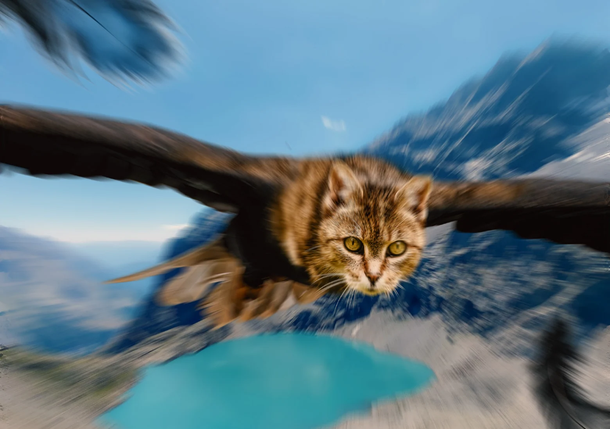
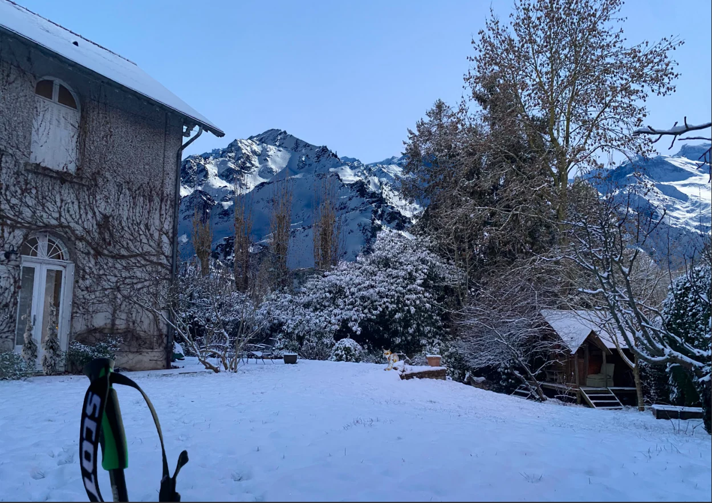
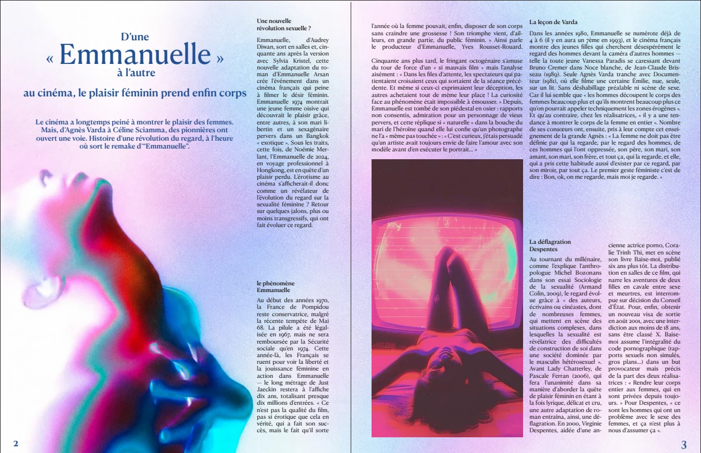
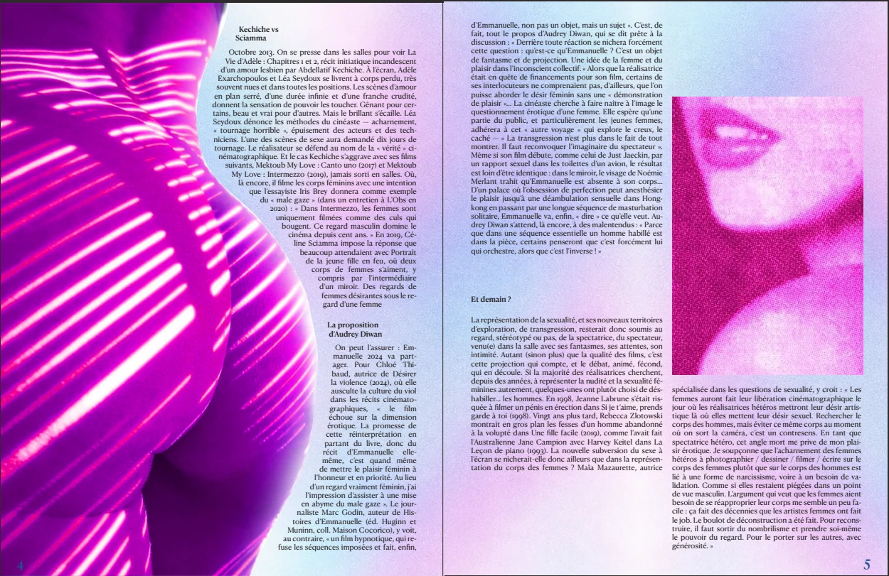

Logiciels
Retouche, photomontage et mise en page.

J’ai suivi une formation sur plusieurs logiciels, parmi lesquels Photoshop, InDesign et Illustrator. Je me suis aussi formé de mon côté à l’utilisation de Premiere Pro et de DaVinci Resolve.
Création d’un univers réaliste à partir de photos dans Photoshop et création d’une chimère, le Chaigle.

D’une « Emmanuelle » à l’autre
Mise en page pour le texte D’une « Emmanuelle » à l’autre.

